浏览器渲染原理
html 字符串->渲染->像素信息
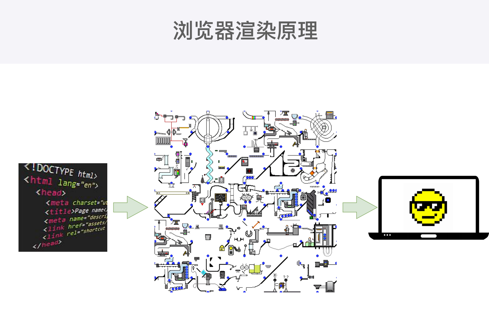
当你输入一个 url 地址，拿到的其实是一个字符串（html,css,js）
当按下回车发生了什么
网络：拿到一个字符串（网络线程去做），然后生成一个渲染任务
渲染：根据这个字符串展示页面信息
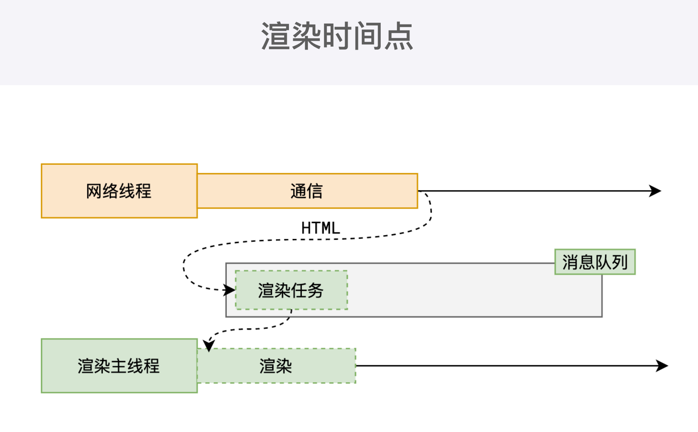
具体渲染流程
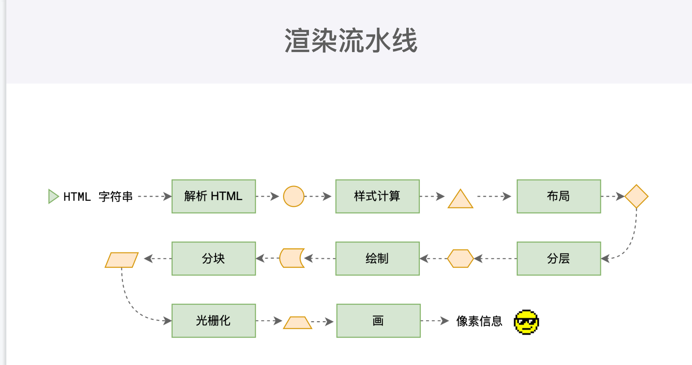
1.解析 html 生成 DOM 树（CSSOM 树）
步骤
当我们打开一个网页时，浏览器都会去请求对应的 HTML 文件。虽然平时我们写代码时都会分为 HTML、CSS、JS 文件，也就是字符串，但是计算机硬件是不理解这些字符串的，所以在网络中传输的内容其实都是 0 和 1 这些字节数据。
（1）字节数据转换为字符串
当浏览器接收到这些字节数据以后，它会将这些字节数据转换为字符串，也就是我们写的代码。
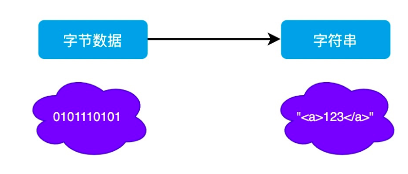
（2）标记化
当数据转换为字符串以后，浏览器会先将这些字符串通过词法分析转换为标记，这一过程在词法分析中叫做标记化。
为什么需要标记化呢？原因很简单，现在浏览器虽然将字节数据转为了字符串，但是此时的字符串就如何一篇标题段落全部写在一行的文章一样，浏览器此时仍然是不能理解的。
例如：
<!DOCTYPE html>
<html lang="en">
<head>
<title>Document</title>
</head>
<body>
<p>this is a test</p>
</body>
</html>
因此现在所做的标记化，本质就是要将这长长的字符串分拆成一块块，并给这些内容打上标记，便于理解这些最小单位的代码是什么意思。
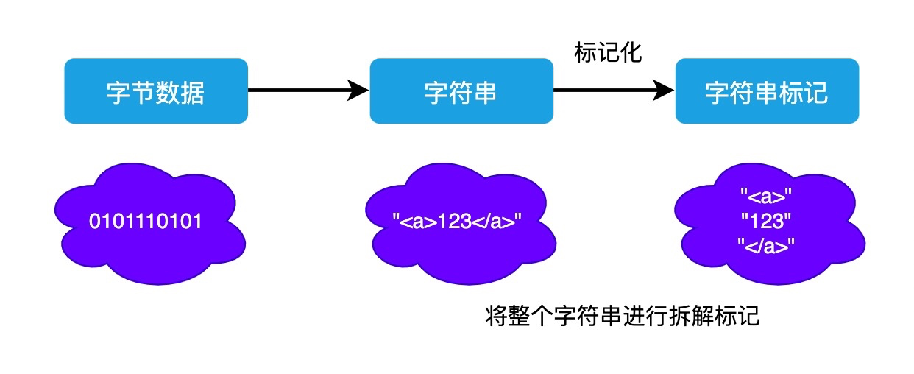
（3）构建 DOM 树
将整个字符串进行了标记化之后，就能够在此基础上构建出对应的 DOM 树出来。
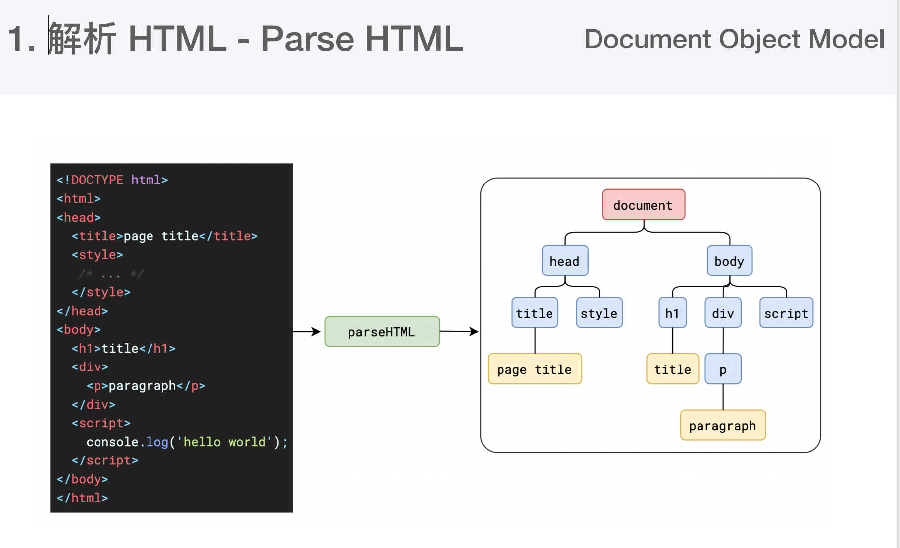
dom 树就是 document 对象，把所有的文档字符串变成关联树
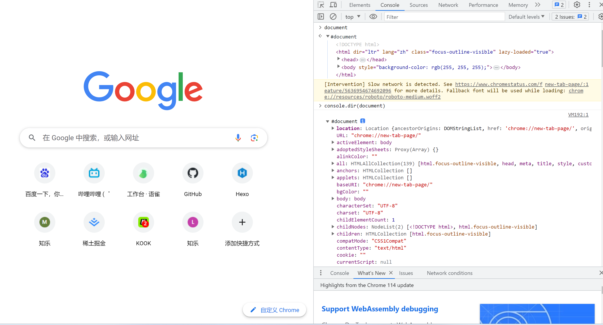
上面的步骤，我们就称之为解析 HTML。整个流程如下图：
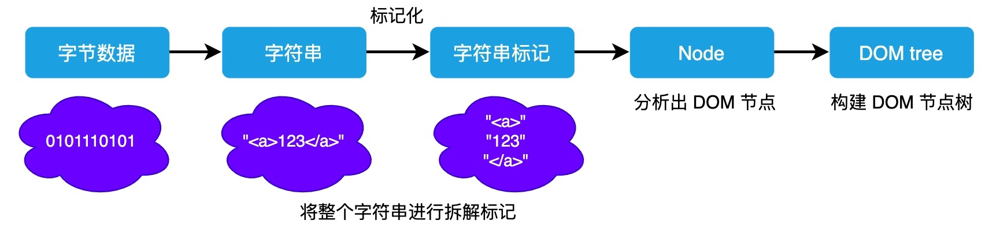
其他(css 解析)
在解析 HTML 的过程中，我们可以能会遇到诸如 style、link 这些标签，这是和我们网页样式相关的内容。此时就会涉及到 CSS 的解析。
为了提高解析效率，浏览器在开始解析前，会启动一个预解析的线程，率先下载 HTML 中的外部 CSS 文件和外部的 JS 文件。
如果主线程解析到 link 位置，此时外部的 CSS 文件还没有下载解析好，主线程不会等待，继续解析后续的 HTML。这是因为下载和解析 CSS 的工作是在预解析线程中进行的。这就是 CSS 不会阻塞 HTML 解析的根本原因。
外部 css 的链接不会阻塞 html 代码
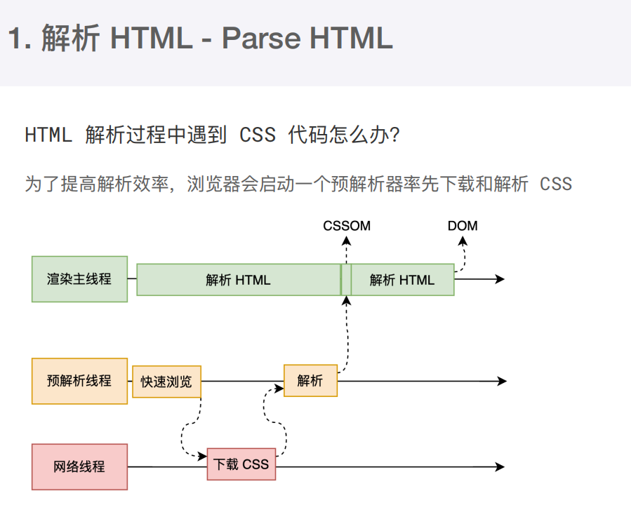
最终，CSS 的解析在经历了从字节数据、字符串、标记化后，最终也会形成一颗 CSSOM 树。
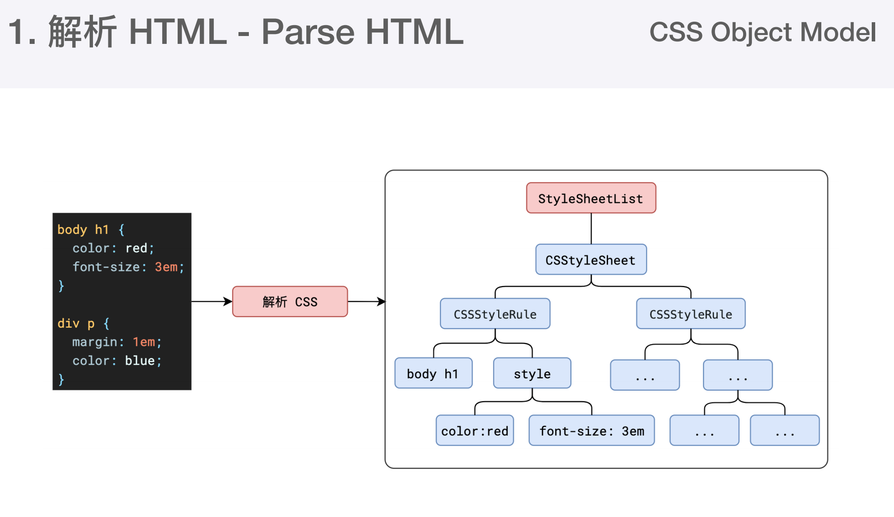
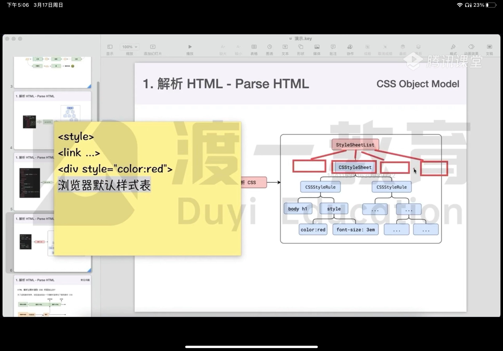
styleSheetList 表示网页中所有的样式表
css 可能通过内部样式表，外部样式表，内联样式表，浏览器默认样式表（每一种样式表都会在样式表的根结点下分出一个子节点）
document.styleSheet 可以查看 cssom 树
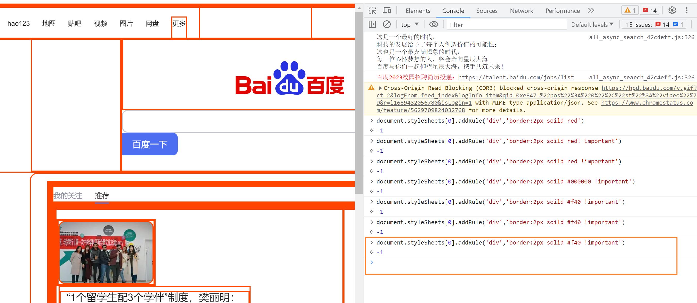
外部 js
对于解析外部 js(script 标签)
预解析线程除了下载外部 CSS 文件以外，还会下载外部 JS 文件、
如果主线程解析到 script 位置，会停止解析 HTML，转而等待 JS 文件下载好，并将全局代码解析执行完成后，才能继续解析 HTML。
为什么呢？
这是因为 JS 代码的执行过程可能会修改当前的 DOM 树，所以 DOM 树的生成必须暂停。这就是 JS 会阻塞 HTML 解析的根本原因。
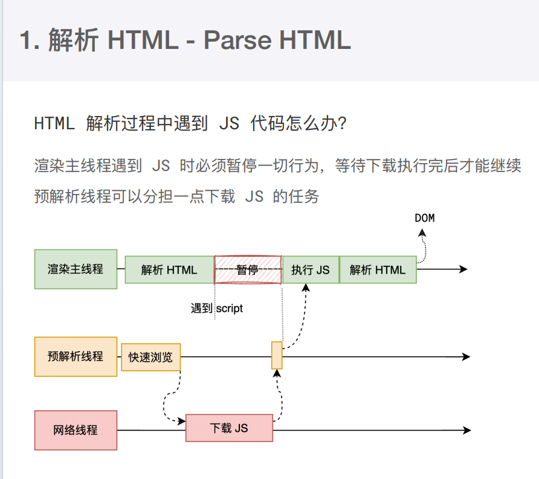
内部 style 和内部 js 又怎么处理的（疑问）?
最终
最终形成两棵树
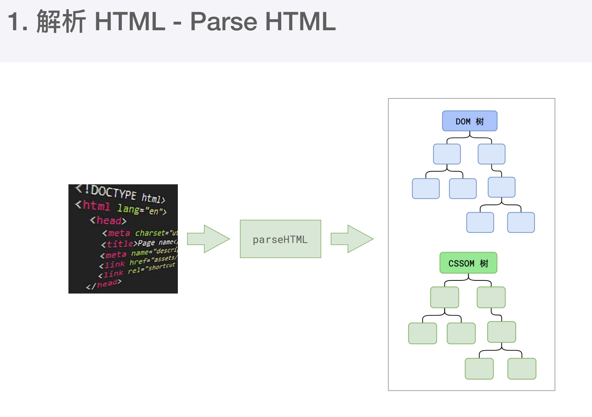
2.样式计算，生成带样式的 DOM 树
拥有了 DOM 树我们还不足以知道页面的外貌，因为我们通常会为页面的元素设置一些样式。主线程会遍历得到的 DOM 树，依次为树中的每个节点计算出它最终的样式，称之为 Computed Style。
在这一过程中，很多预设值会变成绝对值，比如 red 会变成 rgb(255,0,0)；相对单位会变成绝对单位，比如 em 会变成 px。
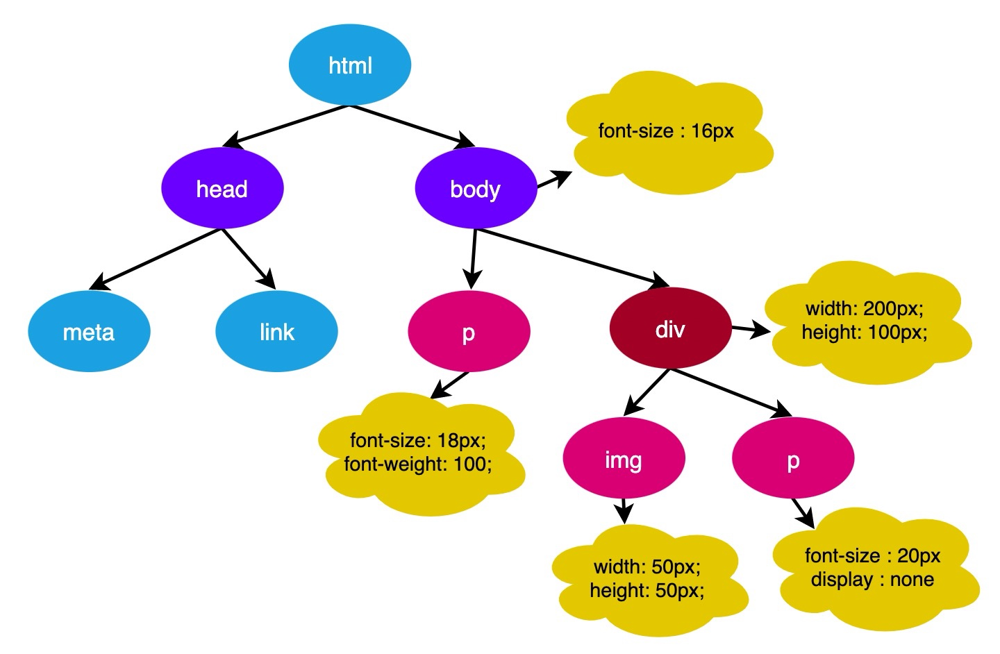
浏览器会确定每一个节点的样式到底是什么，并最终生成一颗样式规则树，这棵树上面记录了每一个 DOM 节点的样式。
另外需要注意的是，这里所指的浏览器确定每一个节点的样式，是指在样式计算时会对所有的 DOM 节点计算出所有的样式属性值。如果开发者在书写样式时，没有写某一项样式，那么大概率会使用其默认值。例如：
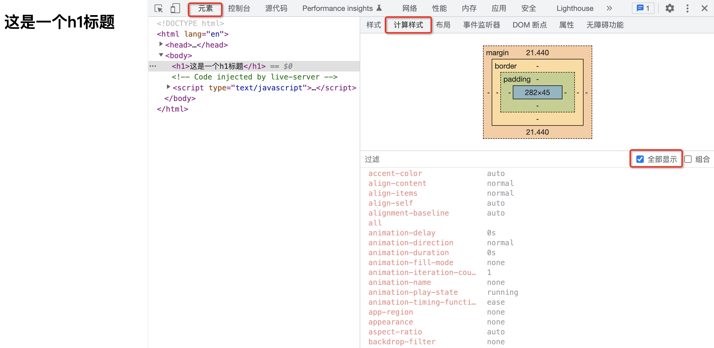
css 属性值的计算过程就发生在这一步
这一步完成后，我们就得到一棵带有样式的 DOM 树。也就是说，经过样式计算后，之前的 DOM 数和 CSSOM 数合并成了一颗带有样式的 DOM 树。
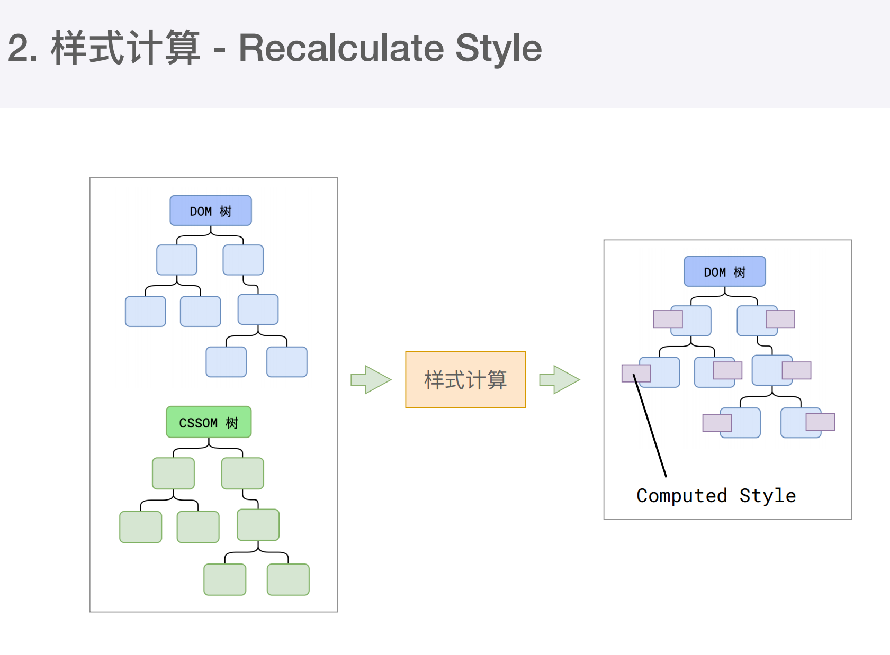
3.布局，生成 layout 树
主线程会遍历刚刚构建的 DOM 树，根据 DOM 节点的计算样式计算出一个布局树（layout tree）。布局树上每个节点会有它在页面上的 x，y 坐标以及盒子大小（bounding box sizes）的具体信息。
布局树是要找到每个节点的几何信息
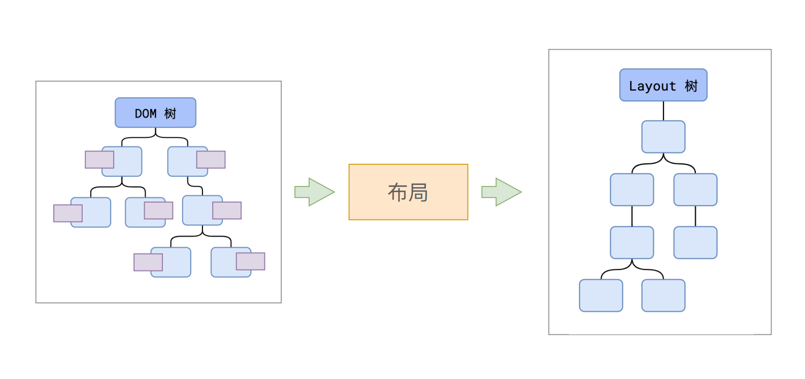
布局树大部分时候，和 DOM 树并非一一对应。虽然它长得和先前构建的 DOM 树差不多，但是不同的是这颗树只有那些可见的（visible）节点信息。
1.比如 display:none 的节点没有几何信息，因此不会生成到布局树；
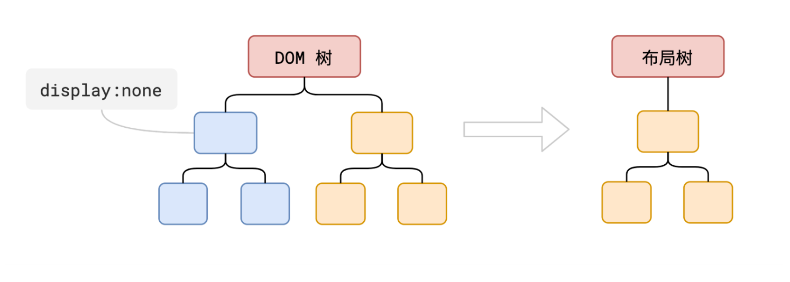
2.又比如使用了伪元素选择器，虽然 DOM 树中不存在这些伪元素节点，但它们拥有几何信息，所以会生成到布局树中。
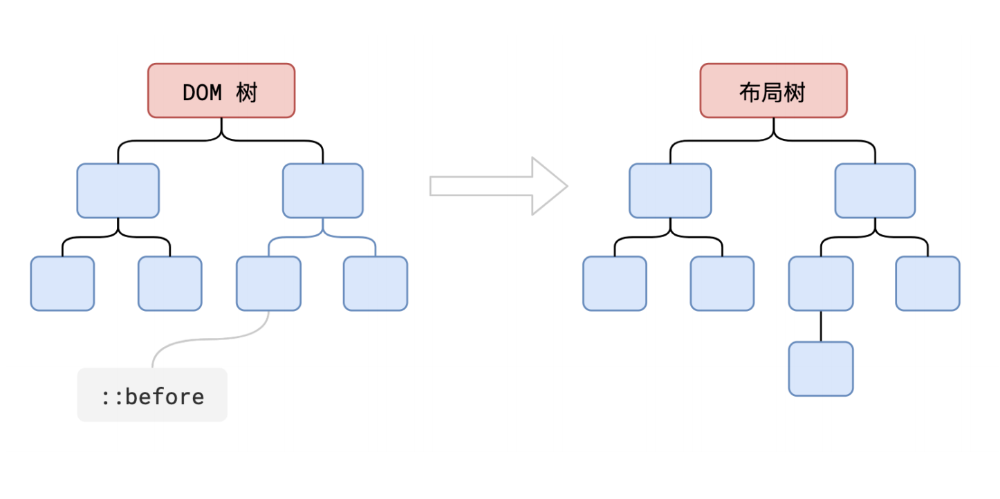
3.还有匿名行盒、匿名块盒等等都会导致 DOM 树和布局树无法一一对应。
内容必须在行盒元素中，比如 p 是块盒，那么 a 文本必须再包一层匿名行盒，行盒块盒说的是 css，行级块级说的是 html,盒的类型由 css 来决定
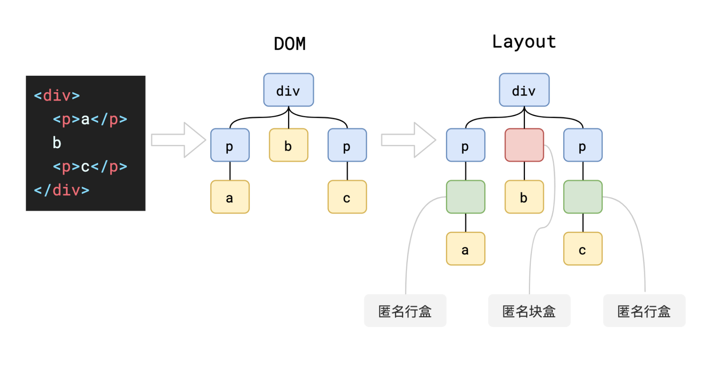这一步让一颗带有样式的 DOM 树变成了 layout 树
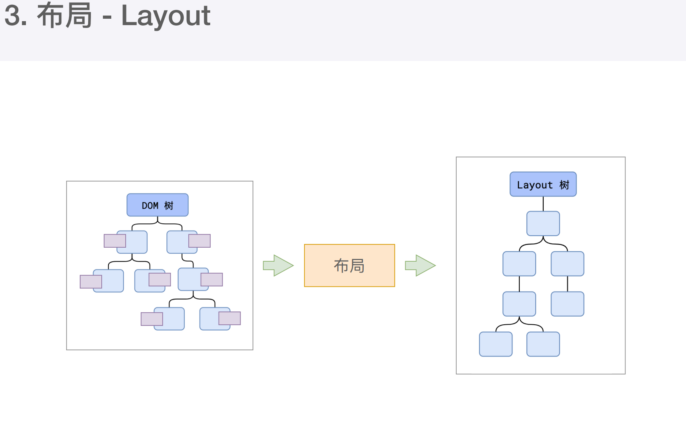
4.分层，生成 layer 树
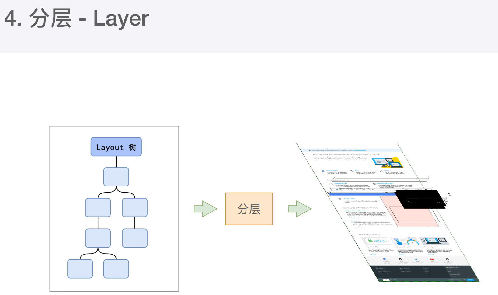
分层的好处在于，将来某一个层改变后，仅会对该层进行后续处理，从而提升效率。
为了确定哪些元素需要放置在哪一层，主线程需要遍历整颗布局树来创建一棵层次树（**Layer Tree**）
页面如何分层是由浏览器决定的
跟堆叠上下文有关的属性会影响浏览器的分层决定
滚动条、堆叠上下文、transform、opacity 等样式都会或多或少的影响分层结果，也可以通过使用 will-change 属性来告诉浏览器对其分层。
will-change 是填写一个属性，告诉浏览器那个属性会改变，然后单独来一层，来提高效率
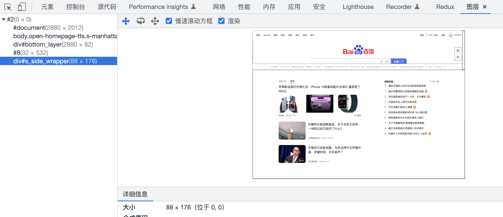
滚动条一般会单独分一层，其实滚动条都是一帧一帧画出来的
任何看见的动画效果其实都是一帧一帧绘制出来的，包括鼠标移动，但鼠标移动是由操作系统来绘制的，为什么鼠标能动，内容能动就是屏幕在不停地刷新，为什么高刷屏流畅，因为他刷的快，所以动画效果显示的就好
屏幕其实一直在不停绘制
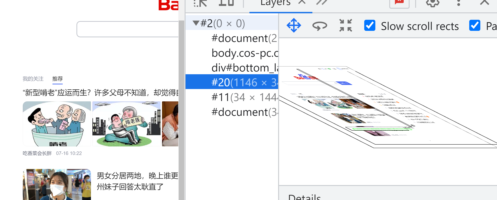
注：在更多工具中可以查看页面的分层
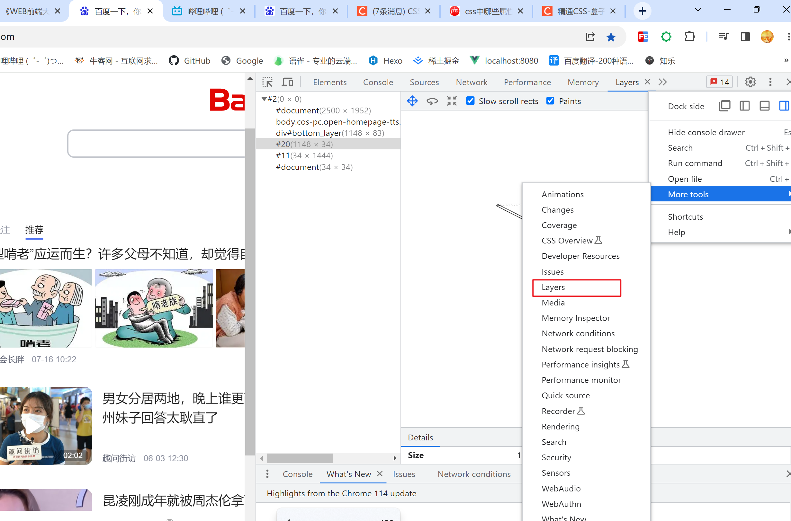
5.绘制，生成绘制指令
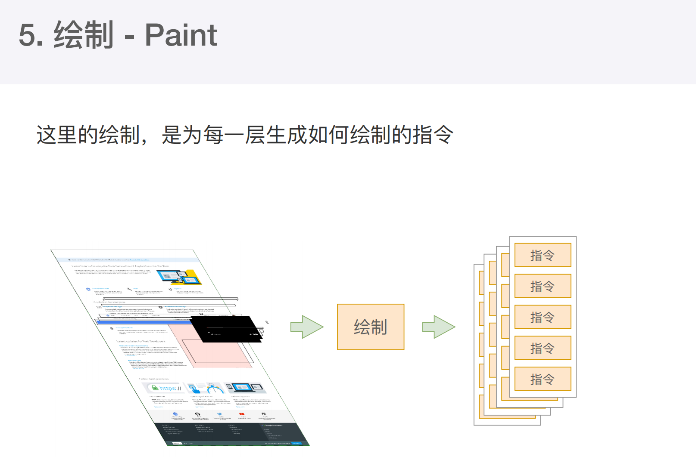
绘制指令
分层里面的每一层都会有一个绘制指令
这里的绘制指令，类似于“将画笔移动到 xx 位置，放下画笔，绘制一条 xx 像素长度的线”，我们在浏览器所看到的各种复杂的页面，实际上都是这样一条指令一条指令的执行所绘制出来的。
其实浏览器内部也会根据你的代码去调用 canvas 会绘制页面
如果你熟悉 Canvas，那么这样的指令类似于：
context.beginPath(); // 开始路径
context.moveTo(10, 10); // 移动画笔
context.lineTo(100, 100); // 绘画出一条直线
context.closePath(); // 闭合路径
context.stroke(); // 进行勾勒
但是你要注意，这一步只是生成诸如上面代码的这种绘制指令集，还没有开始执行这些指令。
生成绘制指令集后，渲染主线程的工程就暂时告一段落，接下来主线程将每个图层的绘制信息提交给合成线程，剩余工作将由合成线程完成。
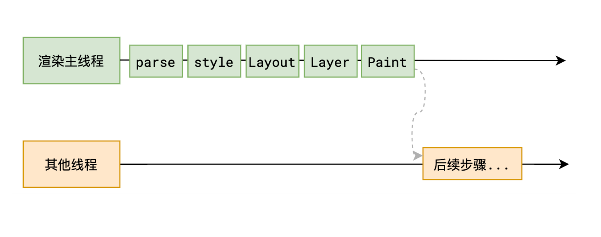最终
每一个图层(分层)生成一个绘制指令集，把绘制指令集交于合成线程（layer 层里带着绘制指令）
6.分块
合成线程首先对每个图层进行分块，将其划分为更多的小区域。
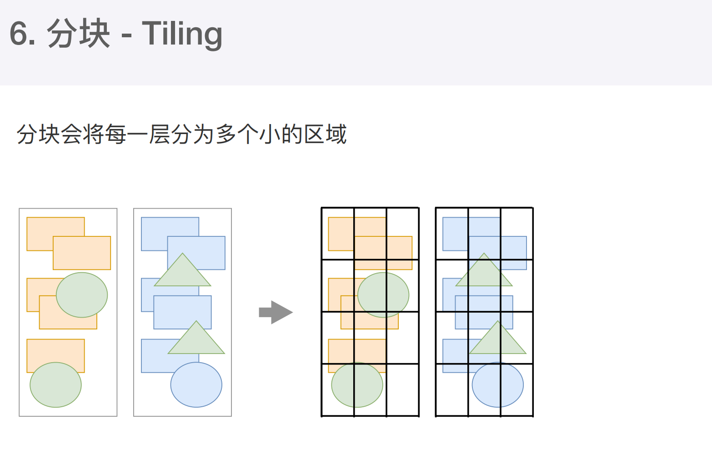
此时，它不再是像主线程那样一个人在战斗，它会从线程池中拿取多个线程来完成分块工作。
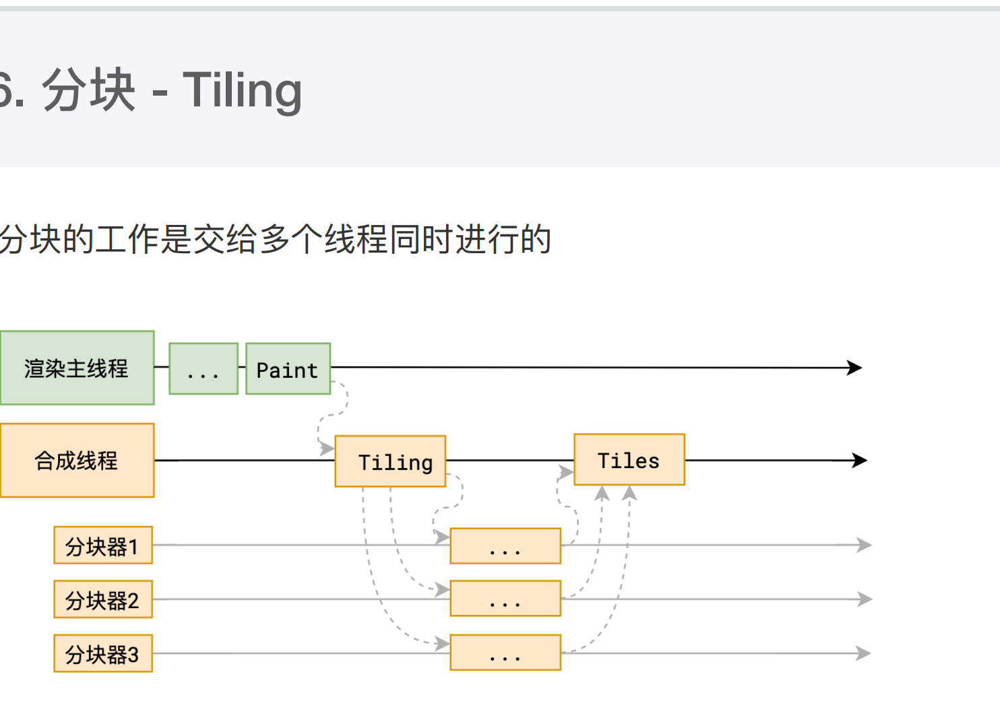
tiling：铺地砖（分块）
tiles：瓷砖（汇总）
7.光栅化
分块完成后，进入光栅化阶段。所谓光栅化，就是将每个块变成位图。
位图就是像素点的信息，算出每个像素点的颜色，色块的颜色
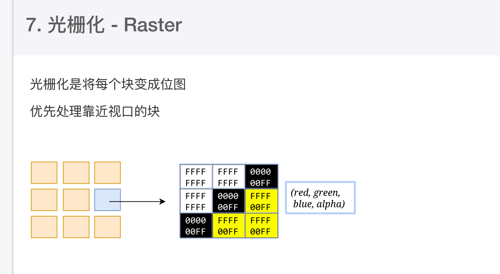
光栅化的操作，并不由合成线程来做，而是会由合成线程将块信息交给 GPU 进程，以极高的速度完成光栅化。
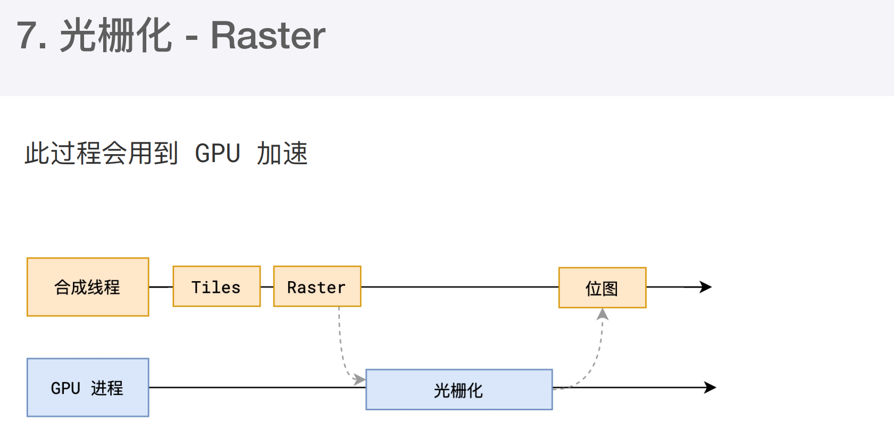
GPU 进程会开启多个线程来完成光栅化，并且优先处理靠近视口区域的块。
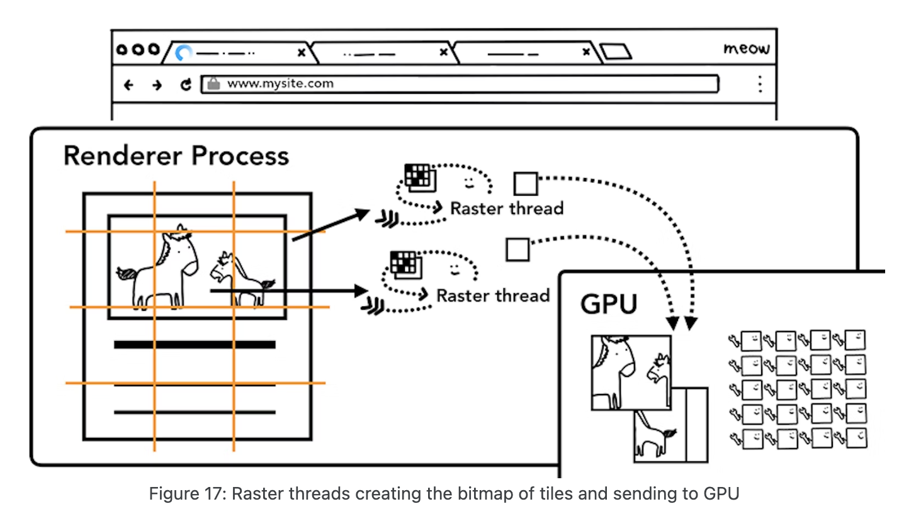
注：
绘制指令没有确定颜色，确定颜色是由光栅化来做的，而光栅化之前会先进行分块，分块以后交由 GPU 来进行光栅化
8.画
当所有的图块都被栅格化后，合成线程会拿到每个层、每个块的位图，从而生成一个个「指引（quad）」信息。
quad（指引信息），找出像素点的信息在于屏幕上的什么位置
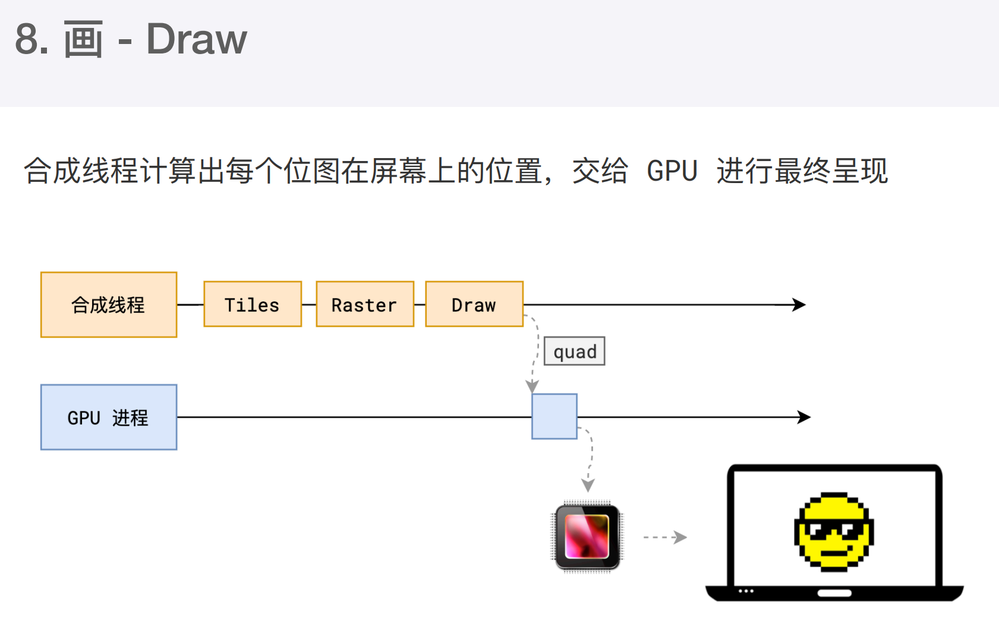
指引会标识出每个位图应该画到屏幕的哪个位置，以及会考虑到旋转、缩放等变形。
变形发生在合成线程，与渲染主线程无关，这就是 transform 效率高的本质原因。
合成线程会通过 IPC 向浏览器进程（browser process）提交（commit）一个渲染帧。这个时候可能有另外一个合成帧被浏览器进程的 UI 线程（UI thread）提交以改变浏览器的 UI。这些合成帧都会被发送给 GPU 完成最终的屏幕成像。
如果合成线程收到页面滚动的事件，合成线程会构建另外一个合成帧发送给 GPU 来更新页面。
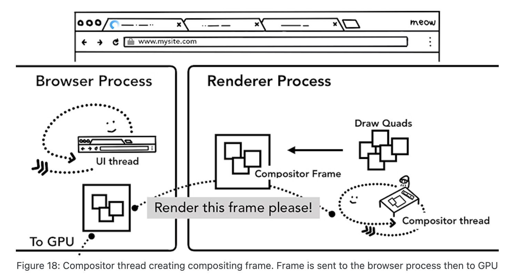
为什么要通过 Gpu 进程去通知物理显卡如何画呢？
因为合成线程在渲染进程里，物理显卡需要系统调用，必须通过 GPU 进程进行，这样做更安全，就算渲染进程遭到了攻击也无法对我们的计算机造成危害。
总结
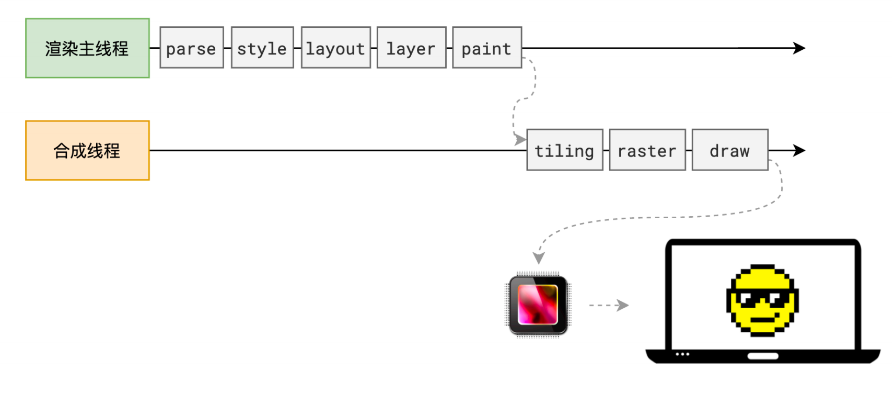
浏览器是如何渲染页面的？
当浏览器的网络线程收到 HTML 文档后，会产生一个渲染任务，并将其传递给渲染主线程的消息队列。
在事件循环机制的作用下，渲染主线程取出消息队列中的渲染任务，开启渲染流程。
整个渲染流程分为多个阶段，分别是： HTML 解析、样式计算、布局、分层、绘制、分块、光栅化、画
每个阶段都有明确的输入输出，上一个阶段的输出会成为下一个阶段的输入。
这样，整个渲染流程就形成了一套组织严密的生产流水线。
渲染的第一步是解析 HTML。
解析过程中遇到 CSS 解析 CSS，遇到 JS 执行 JS。为了提高解析效率，浏览器在开始解析前，会启动一个预解析的线程，率先下载 HTML 中的外部 CSS 文件和 外部的 JS 文件。
如果主线程解析到 link 位置，此时外部的 CSS 文件还没有下载解析好，主线程不会等待，继续解析后续的 HTML。这是因为下载和解析 CSS 的工作是在预解析线程中进行的。这就是 CSS 不会阻塞 HTML 解析的根本原因。
如果主线程解析到 script 位置，会停止解析 HTML，转而等待 JS 文件下载好，并将全局代码解析执行完成后，才能继续解析 HTML。这是因为 JS 代码的执行过程可能会修改当前的 DOM 树，所以 DOM 树的生成必须暂停。这就是 JS 会阻塞 HTML 解析的根本原因。
第一步完成后，会得到 DOM 树和 CSSOM 树，浏览器的默认样式、内部样式、外部样式、行内样式均会包含在 CSSOM 树中。
渲染的下一步是样式计算。
主线程会遍历得到的 DOM 树，依次为树中的每个节点计算出它最终的样式，称之为 Computed Style。
在这一过程中，很多预设值会变成绝对值，比如 red 会变成 rgb(255,0,0)；相对单位会变成绝对单位，比如 em 会变成 px
这一步完成后，会得到一棵带有样式的 DOM 树。
接下来是布局，布局完成后会得到布局树。
布局阶段会依次遍历 DOM 树的每一个节点，计算每个节点的几何信息。例如节点的宽高、相对包含块的位置。
大部分时候，DOM 树和布局树并非一一对应。
比如 display:none 的节点没有几何信息，因此不会生成到布局树；又比如使用了伪元素选择器，虽然 DOM 树中不存在这些伪元素节点，但它们拥有几何信息，所以会生成到布局树中。还有匿名行盒、匿名块盒等等都会导致 DOM 树和布局树无法一一对应。
下一步是分层
主线程会使用一套复杂的策略对整个布局树中进行分层。
分层的好处在于，将来某一个层改变后，仅会对该层进行后续处理，从而提升效率。
滚动条、堆叠上下文、transform、opacity 等样式都会或多或少的影响分层结果，也可以通过 will-change 属性更大程度的影响分层结果。
再下一步是绘制
主线程会为每个层单独产生绘制指令集，用于描述这一层的内容该如何画出来。
完成绘制后，主线程将每个图层的绘制信息提交给合成线程，剩余工作将由合成线程完成。
合成线程首先对每个图层进行分块，将其划分为更多的小区域。
它会从线程池中拿取多个线程来完成分块工作。
分块完成后，进入光栅化阶段。
合成线程会将块信息交给 GPU 进程，以极高的速度完成光栅化。
GPU 进程会开启多个线程来完成光栅化，并且优先处理靠近视口区域的块。
光栅化的结果，就是一块一块的位图
最后一个阶段就是画了
合成线程拿到每个层、每个块的位图后，生成一个个「指引（quad）」信息。
指引会标识出每个位图应该画到屏幕的哪个位置，以及会考虑到旋转、缩放等变形。
变形发生在合成线程，与渲染主线程无关，这就是 transform 效率高的本质原因。
合成线程会把 quad 提交给 GPU 进程，由 GPU 进程产生系统调用，提交给 GPU 硬件，完成最终的屏幕成像。
其他
我们都知道，HTML 用于描述网页的整体结构。为了理解 HTML，浏览器必须将它转为自己能够理解的格式，也就是 DOM（文档对象模型）
浏览器引擎有一段特殊的代码，称为解析器，用于将数据从一种格式转换为另一种格式。
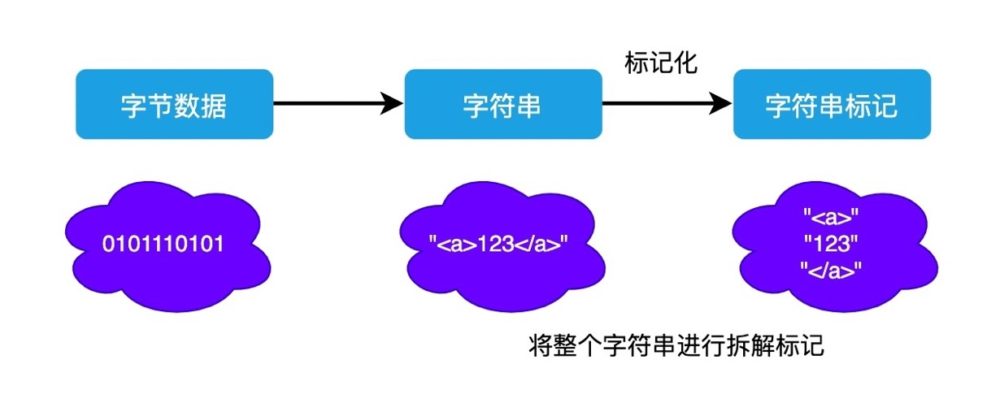
浏览器一点一点地构建 DOM。一旦第一块代码进来，它就会开始解析 HTML，将节点添加到树结构中。

构建出来的 DOM 对象，实际上有 2 个作用：
- HTML 文档的结构以对象的方式体现出来，形成我们常说的 DOM 树
- 作为外界的接口供外界使用，例如 JavaScript。当我们调用诸如 document.getElementById 的方法时，返回的元素是一个 DOM 节点。每个 DOM 节点都有许多可以用来访问和更改它的函数，用户看到的内容也会相应地发生变化。

CSS 样式会被映射为 CSSOM（ CSS 对象模型），它和 DOM 很相似，但是针对的是 CSS 而不是 HTML。
在构建 CSSOM 的时候，无法进行增量构建（不像构建 DOM 一样，解析到一个 DOM 节点就扔到 DOM 树结构里面），因为 CSS 规则是可以相互覆盖的，浏览器引擎需要经过复杂的计算才能弄清楚 CSS 代码如何应用于 DOM。
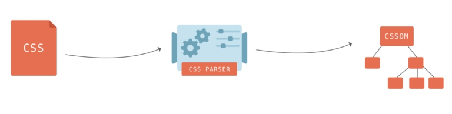
当浏览器正在构建 DOM 时，如果它遇到 HTML 中的 <script>...</script> 标记，它必须立即执行它。如果脚本是外部的，则必须先下载脚本。
过去，为了执行脚本，必须暂停解析。解析会在 JavaScript 引擎执行完脚本中的代码后再次启动。
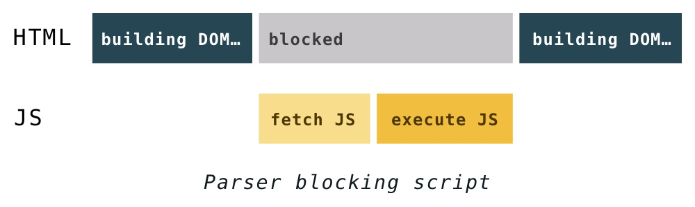
为什么解析必须停止呢？
原因很简单，这是因为 Javascript 脚本可以改变 HTML 以及根据 HTML 生成的 DOM 树结构。例如，脚本可以通过使用 document.createElement( ) 来添加节点从而更改 DOM 结构。
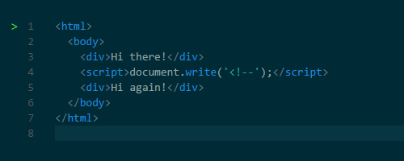
这也是为什么我们建议将 script 标签写在 body 元素结束标签前面的原因。
<body>
<!-- HTML Code -->
<script>
JS Code...
</scirpt>
</body>
接下来我们回头来看一下 CSS 是否会阻塞渲染。
看上去 JavaScript 会阻止解析，是因为它可以修改文档。那么 CSS 不能修改文档，所以它似乎没有理由阻止解析，对吧？
但是，如果脚本中需要获取一些尚未解析的样式信息怎么办？在 JavaScript 中完全可以访问到 DOM 节点的某些样式，或者使用 JavaScript 直接访问 CSSOM。
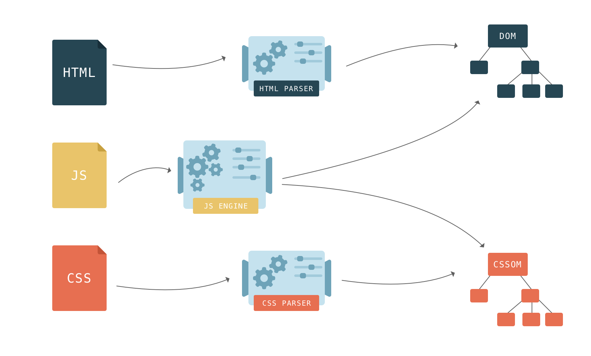
因此，CSS 可能会根据文档中外部样式表和脚本的顺序阻止解析。如果在文档中的脚本之前放置了外部样式表，则 DOM 和 CSSOM 对象的构建可能会相互干扰。
当解析器到达一个脚本标签时，在 JavaScript 执行完成之前无法继续构建 DOM，然而如果这一段 JavaScript 中涉及到访问和使用 CSSOM，那么必须等待 CSS 文件被下载、解析并且 CSSOM 可用。如果 CSSOM 处于未可用状态，则会阻塞 JavaScript 的执行。
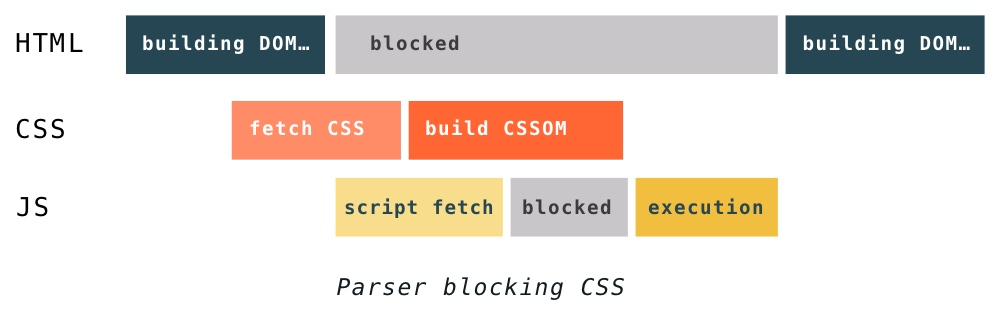
（上图中 JavaScript 的执行被 CSS 构建 CSSOM 的过程阻塞了）
另外，虽然 CSS 不会阻塞 DOM 的构建，但是也会阻塞渲染。
还记得我们前面有讲过要 DOM 树和 CSSOM 树都准备好，才会生成渲染树（ Render Tree ）么，浏览器在拥有 DOM 和 CSSOM 之前是不会显示任何内容。
这是因为没有 CSS 的页面通常无法使用。如果浏览器向你展示了一个没有 CSS 的凌乱页面，那么片刻之后就会进入一个有样式的页面，不断变化的内容和突然的视觉变化会给用户带来混乱的用户体验。
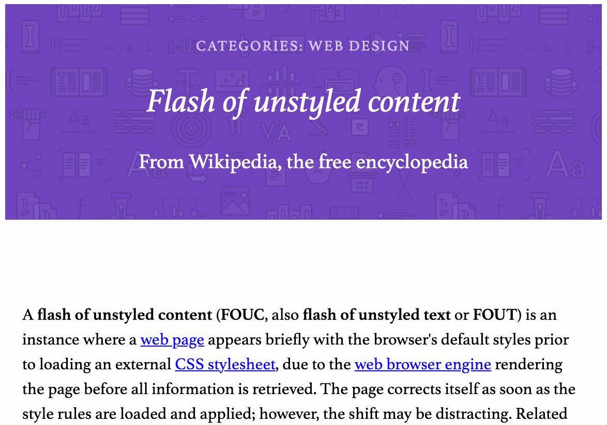
（这种糟糕的用户体验有一个名字，叫做“无样式内容闪现”，Flash of Unstyled Content，或者简称 FOUC ）
为了解决这些问题，所以我们需要尽快的交付 CSS。
这也解释了为什么“顶部样式，底部脚本”被称之为“最佳实践”。
随着现代浏览器的普及，浏览器为我们提供了更多强大的武器（资源提示关键词），合理利用，方可大幅提高页面加载速度。
无样式内容闪现
在网页开发中，如果使用外部样式表 (CSS) 并且浏览器加载样式表的时间较长，可能会导致页面出现“无样式内容闪现”的情况。这种情况通常发生在页面开始加载时，浏览器首先加载并显示没有样式的内容，然后再加载和应用样式，导致内容在没有样式的状态和有样式的状态之间闪烁或跳动。
这种问题的主要原因是浏览器在解析 HTML 时会按照文档流的顺序逐步显示内容，如果样式表还未完全加载或解析，浏览器会先显示未应用样式的内容，然后再应用样式。这种行为尤其在较慢的网络环境或者样式表很大时更为明显。
未解决问题
假如 dom 树已经解析好，但 cssom 还没解析好，这个时候会进入的浏览器渲染流程的第二个步骤样式计算吗？
内部 style 和内部 js 又怎么处理的？
在构建 dom 树的时候，js 会阻塞构造，那么这个时候 js 如果要操作 dom 树呢？这个时候 dom 都没有构建完该怎么办呢？
问题
什么是 reflow？（重排）
reflow 的本质就是重新计算 布局(layout)树。
当进行了会影响布局树的操作后，需要重新计算布局树，会引发布局(layout)。
为了避免连续的多次操作导致布局树反复计算，浏览器会合并这些操作，当 JS 代码全部完成后再进行统一计算。所以，改动属性造成的 reflow 是异步完成的。
也同样因为如此，当 JS 获取布局属性时，就可能造成无法获取到最新的布局信息。
浏览器在反复权衡下，最终决定获取属性立即 reflow。
当获取布局属性时立即立即 reflow
改变元素的宽度等，需要重新 layout,layer,paint
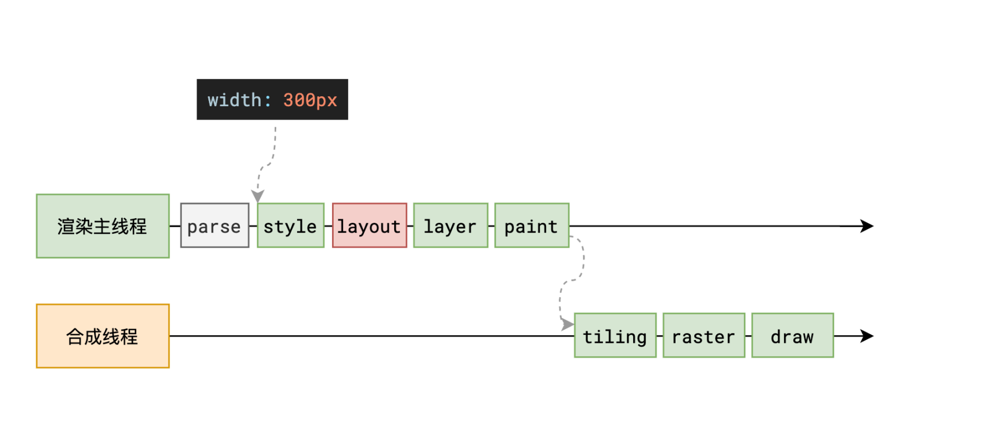
什么是 repaint？（重绘）
repaint 的本质就是重新根据分层信息计算了绘制指令。
当改动了可见样式后，就需要重新计算，会引发 repaint。
由于元素的布局信息也属于可见样式，所以 reflow 一定会引起 repaint。
只改变颜色，只需要从 paint 这步往后开始改变就可以了
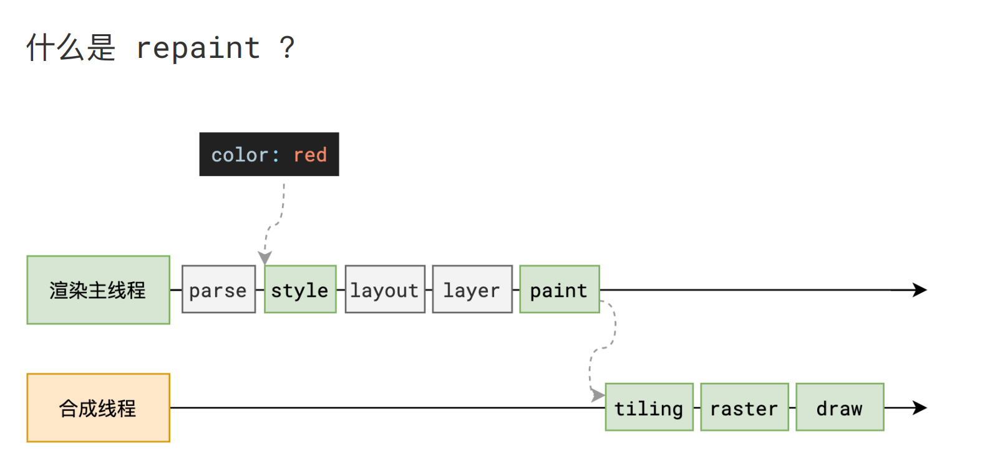
为什么 transform 的效率高？
因为 transform 既不会影响布局也不会影响绘制指令，它影响的只是渲染流程的最后一个「draw」阶段
由于 draw 阶段在合成线程中，所以 transform 的变化几乎不会影响渲染主线程。反之，渲染主线程无论如何忙碌，也不会影响 transform 的变化。
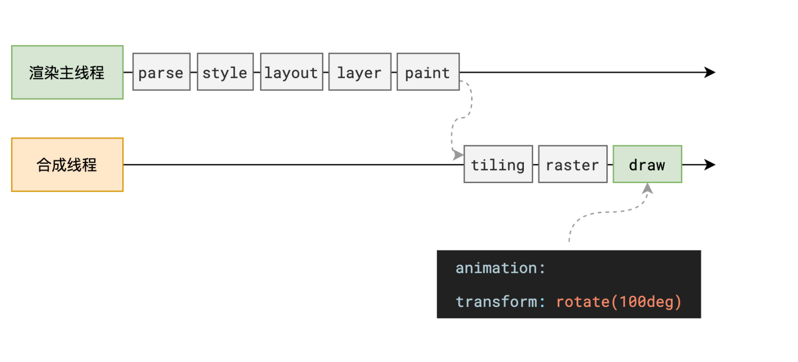
cssom 不形成能渲染页面吗
CSSOM 本身并不形成能渲染页面的内容，它主要用于处理和操作样式信息。要渲染页面，需要将 CSSOM 与 DOM 结合使用。
在浏览器中，页面的渲染是由 HTML DOM 和 CSSOM 一起完成的。HTML DOM 表示页面的结构和内容，而 CSSOM 表示页面的样式。当浏览器解析 HTML 文档时，它会同时构建 DOM 和 CSSOM。然后，浏览器将这两者结合起来，计算出每个元素应用的最终样式，并将页面渲染到屏幕上。
因此，要渲染页面，需要同时处理 HTML DOM 和 CSSOM。只有当这两者都被浏览器解析和计算完毕后，才能最终渲染出页面的样式和内容。
css 未解析完成能显示页面吗
在浏览器中，即使 CSS 尚未解析完成，页面也会显示内容。这是因为浏览器在解析 HTML 时会按顺序逐步渲染页面，而不需要等待 CSS 解析完成。
当浏览器解析 HTML 文档时，它会逐行解析并渲染页面内容。如果遇到外部样式表链接（通过 标签）或内部样式（通过